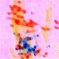
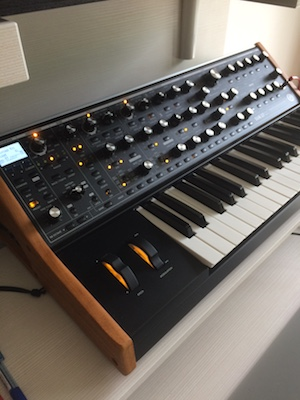
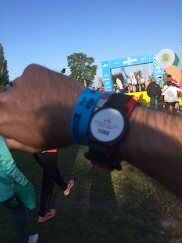
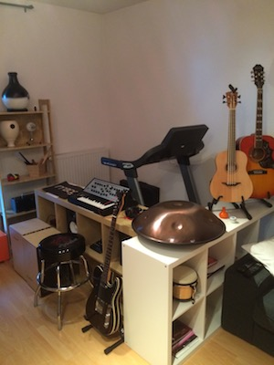
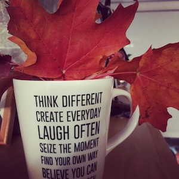
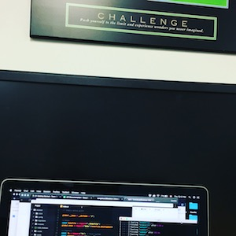
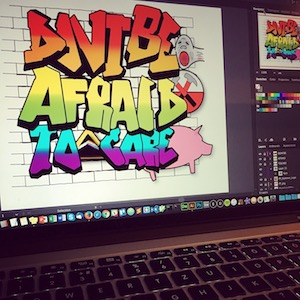

Camillo Angelozzi HW1
Main Introduction
Hello, my name is Camillo
Italian born; although, I left Italy 20 years ago to pursue my “Learning Journey”. Away for so long from my home country, I still bring with me the love for pizza, pasta and football/soccer. On the other hand, I feel lucky and blessed of my experiences; living in different countries, studying and working with many different cultures opened my eyes on the importance of keeping myself updated with new skills. For me this is a come-back to Canada and to Fanshawe College where I already graduated in 2000 for Tourism and Travel. Now, I am back for my next challenge started not long ago, the goal is to get as much knowledge and exposure about Web Development and Web Design, I am ready…. A final and special mention, to my two kids who are the ultimate source of motivation and inspiration; nevertheless, a continuous daily Learning Experience!
My Hobbies...or at least some of them!
To list all the hobbies and interests it would take long time since I tend to be passionate about them; in addition, I do not mention my main and most important 'hobby' which is to spend time with my two kids. After this short preface, I can easily list three main interests that I always try to follow and take care: Music, Coding, Running. About Music, I have grown up with tapes, vinyls listening to Pink Floyd in loop, my dream was to get a Music Diploma and finally not long ago, I could get a Music Production and Sound Engineering Diploma, I did not became the new Alan Parson, but the creativity side is amazing and addictive...which brings to my second hobby which is Coding. In the last year, after being a self learner, I have dedicated time for a Bootcamp FullStack, it was an amazing experince, actually overwhelming, of course in this field, the learning path never stops. Finally Running, used to run run run and run, marathons, half-marathons, kilometers after kilometers, now with many other priorities, it is hard to follow up; however, I try to make time and get a 20/30 minutes run everyday.
Gallery
     Future, a chapter still to write.
Who knows! For sure, what I know is that Knowledge and Creativity is the single best investment of our time. I decided to challenge myself (again) in a new learning journey; I have all the tools in my hand to develop what I like and what I would like. Now I must roll my shirt cuffs, and do my best.